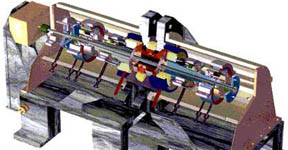
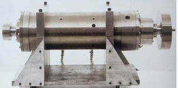
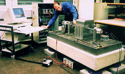
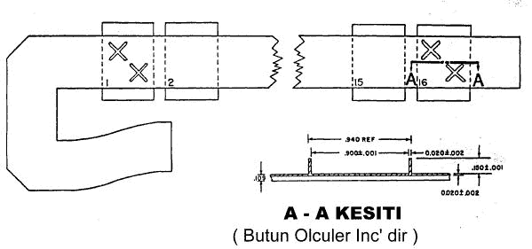
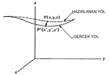
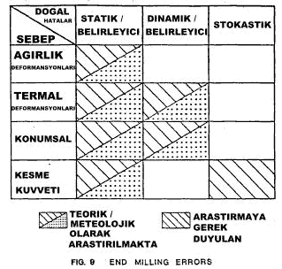
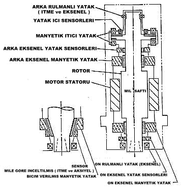

|
9 - YENÝ YATIRIMLAR ve ARAÞTIRMALAR
9.1.
Genel Olarak
Manyetik
yataklarýn her türlü endüstri alanýnda kullanýlýr olma özelliðinin
farkedilmesi ile bu alanda birçok çalýþmalar yapan araþtýrmacýlar
her geçen gün bu yatak sistemini farklý alanlara uyarlamaktalar.
Bu araþtýrmalarýn sonuçlarý incelendiðinde memnun edici olduðu
görülmektedir.
9.2.NASA - Yüksek Sýcaklýklarda Kullanýlmak Üzere Manyetik
Yataklarýn Gaz Türbinleri Ýçin Geliþtirilmesi
9.2.1.
NASA Lewis - 1000°F - 1200°F Sýcaklýklarda Manyetik Yataðýn
Test Edilmesi
Nasa Lewis araþtýrma merkezi ve U.S hükümetinin yeni araþtýrma
projelerinden bir tanesi manyetik yataklardýr. NASA / U.S.
ordusu, gaz türbinlerinin gelecekteki uygulama alanlarý dikkate
alarak, bu makinelerin yüksek sýcaklýklarda kullanýmý için
uygulamalar baþlattýlar. Þekil
9. NASA / Lewis Manyetik Yatak Test Ünitesi:

Þekil 9.1. NASA / Lewis Manyetik Yatak Test Ünitesi
1999
yýlýnda tamamlanan çalýþmalar sonucunda önemli burgular elde
edilmiþtir. 'Allison Engine Company'ile iþbirliði yapýlarak
yüksek sýcaklýklardaki manyetik yataklarýn çalýþmasý ele alýnmýþtýr.
Bu test esnasýnda tek problem konvensiyel tasarýmlarýn korunmasý
olmuþtur. Lewis'in esnek - duyarlý test makinesi yüksek sýcaklýklara
dayanan manyetik yatak için deðiþtirilmiþtir (Þekil 9.1).
1997'nin üçüncü yarýsýnda baþlatýlan test sonucunda DN deðerleri,
yüksek sýcaklýk kontrolü, tabakalarýn kaplanmasý, fiber kuvvetlendiriciler,
yüksek sýcaklýktaki tel yalýtýmlarýnýn geliþtirilmesi asýl
parametreler olarak ele alýnmýþtýr.
9.3.
Elektromanyetik Yataklar - Suni Kalp Pompasý Prototipi
Manyetik
yatakta, geliþtirilen suni kalp projesi çerçevesinde bir prototip
oluþturularak (CF3), su ve kan kullanýlarak deðiþik çaplarda
(pompa) baþarýlý olarak gerçekleþtirilen bir test yapýldý.
Tahminen pompa 1.6inc. boyunda, 4 inc çapýndadýr. Bu yeni
üretilen devre insanlara kalp yardýmcý devresi olarak yerleþtirilebilmektedir.
Pompadaki
manyetik yatakta;
1-) Ýtici kýsým giriþ / manyetik moment, bölündüðünde 8 bölüntü,
2-) Boþaltma radyal kýsmý / itici yatak bölündüðünde dahi
yine 8 bölüntü elde edilir.
Bu
durum itici yatak merkezindeki geçiþ mesafesinde, yatak performansýnýn
iyi olmasýný saðlamaktadýr. Bunun en önemli sebebi pompanýn
tek yönlü çalýþmasý olarak tanýmlanabilir. CF3 yatak formlarý
ilk aþamada birçok malzemenin karýþýmý olarak yapýlmaktaydý.
Kullanýlan bu alaþýmlar ise birçok problemleri de beraberinde
getiriyordu. Bu yüzden yeni malzemeler geliþtirilerek yeni
tip materyal bulundu. CF3 sisteminin bütün unsurlarý þu an
silikon esaslý demir ile yeniden yapýlarak bu problemlerin
önüne geçilmiþtir. Yeni tür malzemeden yapýlan bu küçük yataklara
yüklenen kapasite arttýrýlabilmektedir. Bu þekilde tekrardan
üretilen manyetik yatak sistemli CF3 prototipi, rahatlýkla
kalp pompasý olarak kullanýlabilmektedir. Yatak akýþ karakteristiklerin,
yatak içinde yer alan bobinleri, sensörleri vb. pompa operasyonlarýnýn
altýnda tanýmlanmasý zihinleri karýþtýracak düzeyde olmasýna
yeterliydi. Böyle bir durumda ise ortaya çýkan tek sorun kullanýlan
devrelerin karmaþýk oluþudur. Bunu ön planda tutan tasarýmcýlar
prototipi tekrardan geliþtirme aþamasýna soktular. A / D ve
D / A kartlar ve ciplerle yeniden geliþtirilen TI C60 pompa
serisi, ileri kullanýmlar için uygun bulundu. Bu yeni kontrolör
tahmini bir ders kitabý büyüklüðünde olacaktý. Bu prototipin
yatak sisteminde kullanýlan ileri kontrol iticileri sayesinde
pompa performansý, akýþýn deðiþimine göre iticilerin ters
yön almasýný saðlayarak durumu kontrol altýna alabiliyordu.
Bu da istenen bir durumdu. Bu projenin geliþtirilmesi ve sponsorluðunu
Medquest Products, Inc. þirketi üstlenerek, Artificial Heart
Lab. of Utah' da uygulamaya koyuldu.
9.4.
Manyetik Yataklarda Rotorlar için Kaymalý Yol Kontrolörü
Rotor
üzerindeki bir denge kiriþinin doðrusallýðý için geliþtirilmiþ
bir allogaritmik kontrolördür. Yapýlan bu detaylý çalýþmada
amaç, karýþýk bir basamak durumunda bulunan manyetik yatak
rotor kiriþ sisteminin, þaftýn duraðan halde havada asýlý
kalmasý durumundaki limitlerinin belirlenmesidir. Bu aþama
sonunda 5 serbestlik derecesine sahip bir suni kalp pompasý
modeliyle yapýlan araþtýrma baþarýyla tamamlanmýþtýr (Þekil
9.2).

Þekil 9.2. Üretimi Tamamlanmýþ Manyetik Yatak
9.5.
Manyetik Yataklarda Sonlu Elemanlar Metoduyla Kayýplarýn Hesaplanmasý
1.
A2-D Sonlu elemanlar bilgisayar kodlarý manyetik yatak konfigurasyonlarý
için geliþtirilen bu teknik, rotordaki güç kayýplarý, asýlý
kaldýðý sürece oluþturduðu girdaptan dolayý manyetik yatak
malzemelerinin bu etkilere karþý gösterdiði tepkilerinin hesaplanmasýnda
kullanýlmaktadýr (Þekil 9.3). Modelde kullanýlan inceltilmiþ
etkilerin bir eksenel iletkenlik doðurduðu anda, ölçümlerin
saðlýklý bir þekilde belirlenmesi için deðerler hesaplanýr.
Materyalin bu etkilere doyduðu anda kodlarýn verilmesine baþlanýr.
2. A3-D Sonlu elemanlar bilgisayar destekli kod üretimi hala
geliþtirilme aþamasýndadýr. Manyetik yataktan kopan demir
kayýplarýnýn hesaplanmasýnda kullanýlma amacýný içermektedir.
Bu model hem özdeþ olmayan, hem de özdeþ yataklarda yeterli
derecede kullanýlmaktadýr. Ýlk olarak rotorun bir modeli yapýlarak
analitik olarak çözümü ile manyetik vektörlerin yeterliliði
hesaplanabilmektedir.

Þekil 9.3. Bilgisayar Destekli Test Ünitesi
9.6.
Test Ünitesi - Manyetik Yatak Kontrolü
Düþey
düzlemde çalýþacak manyetik yatak kontrol test ünitesi hala
geliþtirilme aþamasýndadýr. Bu sistemde kullanýlmak üzere
üç yatak bulunmaktadýr. Bunlarýn ikisi normal manyetik yatak
ve üçüncü ise bunlarý hareketlendirebilecek ana tahrik kaynaðý
ve buna ait olan normal bir yataktýr. Rotor modellenerek küçük
bir test ile karakteristik özellikleri geniþ olarak incelenmiþtir.
Gerek rotorun havada asýlý kalmasý gerekse manyetik yataktaki
durumu hala inceleme aþamasýndadýr. Bu iþlemler için; sistemin
iþlemesi, manyetik yatak x, y yanal konumunun belirlenmesi,
eksenel manyetik kontrolörü ve manyetik dengeleme sistemine
ayarlanmasý gerekmektedir. Bu projenin sponsorluðunu NASA
Goddard ve American Flywheel Systems yapmaktadýr.
9.7.
Manyetik Yatak Sistemli Motorlar
Manyetik
yataklar, motorlar üzerinde çok sýnýrlý bir uygulama alanlarýna
sahiptir. Sessiz ve temiz olmalarý motorlar üzerine tasarýmlarýný
saðladý. Bu sayede yapýlan çalýþmalar sonucunda bir manyetik
yatak sistemine sahip bir motor sistemi geliþtirildi. Belirtilen
sistem iki fazlý bi- polar DC temizleyicisidir. Bir ekmek
tahtasý modelli elektronik devreleri, üç pozisyonlu bobinleri
tersine çevrilerek, rotor saat yönü ve saat yönünün tersine
çevrilerek örnek olarak test edilmiþtir. 2000 dev/dak. rotor
hýzýna sahip bu model bu yöndeki uygulamalar için daima hazýr
bulundurulur. Farklý bir temizleyici sisteme sahip rotor bu
yöndeki araþtýrmalar için daima hazýr bulundurulmaktadýr.
Bu sistem tamamiyle analog ve dijital çevirici devrelerin
karýþýmý ile tasarlanmýþtýr. Rotorun analizi için sonlu elemanlar
metodu kullanýlmýþtýr.
9.8.
CNC Dikey Ýþleme Merkezinde Kesme Esnasýnda Meydana Gelen
Takým Yolu Hatalarýnýn Manyetik Yatak Sistemi ile Belirlenmesi
9.8.1.Genel
Olarak
Rotor
kanallarýnýn daha verimli bir þekilde üretim için geliþtirilmiþ
olan mikrodalga yardýmcýsý Þekil 9.4'de gösterilmiþtir. Bu
yardýmcý manyetik toplayýcý olarak çalýþmaktadýr. Burada uygulanan
ikincil talaþ alma iþlemi iþlemden atýlmýþ, bu sayede mil
hýzý ve tabla ilerlemesi yükseltilerek operasyon cazip hale
getirilmiþtir. Yüksek hýzlarda iþleme aþamasýna zaman zaman
da olsa geçilmiþtir. Manyetik yatak kullanýlarak, dikey frezeleme
iþleminde olduðu gibi bir test ünitesi oluþturulmuþ örnek
iþ parçasý üzerinde testler yapýlmýþtýr. Yüzey bitirme iþlemleri
ve toleranslar korunarak limitler dahiline uyulmuþtur. Uygulanmakta
olan bu test Cinninatti Milacron, Westinghouse ve Manyetik
Yataklarý kapsamamaktadýr. Standart ölçüler kullanýlarak belirli
ilerleme ve hýzlarda yapýlan karþýlaþtýrmalarýn amacý, takým
yolu hatalarýnýn düzenlenip mili kontrol altýna almaktý. Burada
yer alan takým yollarý hatalarý parmak
Freze çakýsý ile rotor kanallarýnýn iþlenmesi esnasýnda son
talaþ için adresler belirlenerek kontrolü yapýlmaktadýr. Takým
yolu hatalarýnýn kontrolü için manyetiksel asýlý milin kullanýmý
dikkate alýnarak, yüksek hýzlarda frezeleme çerçevesinde incelemeler
sürdürülmüþtür.

Þekil 9.4. Mikrodalga Yardýmcýsý (Westinghouse Þirketi tarafýndan
geliþtirilmiþtir)
9.8.2.Takým
Yolu Hatalarý
Takým
yolu hatalarý Þekil 9.5'de olduðu gibi 3 eksende gösterilebilmektedir.
Hatalarýn CNC makinelerinde yapýlan iþlemlerde olduðu gibi
ilk girilen takým yolu tanýmlamalarý ile son konumu arasýndaki
farklar takým yolu hatalarý olarak açýklanabilmektedir. Bir
baþka ifadeyle; CNC' de baþlangýç noktasý verilerek takým
sýfýrý tanýmlandýktan sonra iþleme için gerekli kodlarýn girilmesi
ile parça iþlemeye baþlanýr. Bu tanýmlamalarý yaparken birbirleriyle
oluþan mesafe farklýlýklarý takým yollarý hatalarýný doðurmaktadýr.
Mil kontrolünde ise mildeki ufak bir çarpýklýk oldukça büyük
hatalara sebebiyet verebilmektedir.

Þekil 9.5. Takým Yolu Hatalarý
Bu hatalarý 4 gruba ayýrmak mümkündür :
1.
Belirleyici pozisyon hatalarý
2. Isý kökenli deformasyon
3. Kuvvet aðýrlýklý deformasyon
4. Kesme kuvveti deformasyonlarý
Þekil
9.6'da gösterildiði gibi bu hatalarý üç tipte inceleyebiliriz.
Bunlar, statik belirleyici, dinamik belirleyici ve stokastik
hatalardýr. Belirleyici pozisyon ve dinamik hatalar tekrarlanabilir
hatalardýr. makine takýmýnda yapýsal olarak verilmiþ, giriþ
parametreleri ayarlandýðýnda tekrarlanacak olan hatalardýr.
Stokastik hatalar, diðer el üzerinde makineye giriþler yapýldýðýnda
verilen hata deðerleri gibi tanýmlanabilir. Esasen stokastik
hatanýn temeli yüzey pürüzlülüðünden ve bu pürüzlü yüzeylerin
iþlenmesinden meydana gelmektedir.

Þekil 9.6. Hatalarýn Sýnýflandýrýlmasý
9.8.3.
Manyetiksel Kontrollü Miller
makine
takýmlarý için kullanýlan manyetik miller tam anlamýyla deneyseldir.
Uzunca süren bir deney aþamasý sonucunda ortaya çýkarýlýrlar.
Fransa'nýn Mecanique Magnetique (S2M) topluluðu tarafýndan
bu makine takýmlarý için kullanýlan millerin geliþtirilmesi
ve üretimi gerçekleþtirilmektedir. Frezeleme amaçlarý içeren
bu manyetik millerin üç deðiþik modeli günümüzde mevcuttur.
Bu üç model yaklaþýk 20-34 BG, rotor hýzlarý 30.000 - 60.000
dev/dak arasýnda deðiþen sistemlerde rahatlýkla kullanýlmaktadýr.
Manyetik miller bilindiði gibi etkileþimsiz, serbest bir manyetik
ortamda dönebilecek durumlar için tasarlanmaktadýr. Þekil
9.7'de manyetik mil ve yatak unsurlarý gösterilmiþtir. Operasyon
esnasýnda manyetik eksenlerle asýlý kalan mil þaftý herhangi
bir mekaniksel etki ile karþý karþýya gelmemektedir (pozisyon
belirleyici sensörler bu þaftýn etrafýna sýralanmýþtýr).

Þekil 9.7. Manyetik Yatak Elemanlarý
Sensörlerden
alýnan bilgiler kontrol ünitesi tarafýndan korunmakta ve þaftýn
bu pozisyon ölçüleri elektro manyetik bobinler tarafýndan
çeþitli aþamalarda düzeltilmektedir (þaftýn eksenden kaymasý
durumunda üretilecek karþý manyetik kuvvetler gibi). Bu yüzden
þaftýn gerçek konuma dönme esnasýnda bile merkez konumundadýr.
Kütle merkezi geometrik eksenden sapsa bile manyetiksel mil
þaftý her durumda kütle merkezi etrafýnda döndürülebilir.
Önemli bir durumda mil þaftý ±0.005 inc ve 0.5° gibi konumlarda
ekseninden çevirtilebilir. Bu da mil sisteminin performansýnda
herhangi bir düþüþ etkisine sebep olmaz. Manyetik olarak millerin,
kontrol edilmesinin özelliði takým yollarý hatalarýnýn düzeltilmesinde
önemli bir etkiye ve manyetik millerin tasarlanmasýnda önemli
derecede avantajlara sahip olmasýdýr. Bu da takým yollarý
hatalarýnýn düzeltilmesi alanýnda kendini göstermektedir.
Bu avantajlar;
1. 3 ölçülü pozisyon sensörlerinin yapýlmasý kesme iþlemlerine
karþý kontrolün saðlanmasýna yardýmcý olur.
2. 3 ölçülü pozisyon sensörlerinin yapýlmasý, kesme iþleminin
kontrolü için kullanýlabilmektedir.
3. Çevrimin gerçekleþtirilmesi ve mil þaftýnýn eðilmesi (hava
aralýðýnýn sýfýrlandýrýlmasý) ile takým yolu hatalarý sýfýra
indirilebilmektedir. Bu uygulanabilirlik kesme esnasýnda meydana
gelebilecek belirleyici ve stokastik hatalarýn minumuma indirilmesinde
yardýmcý olur.
4. Yüksek hýz gerektiren yerlerde dahi kesme kuvvetlerinin
azaltýlmasý ve bitirme iþlemlerinin düzeltilmesi saðlanabilmektedir.
5. Milin sertlik derecesinin ayarlanmasýnda (genel kontrol
için etkili olan) etkili bir kontrol içerir.
6. Yüksek kesme hýzýna sahip malzemelerde ilerleme miktarý
(tabla hýzý) yükseltilebilmektedir.
Mesela
10 mm çapýnda bir parmak frezeleme iþleminde parçanýn yüzey
kalitesi çok iyi kalitede olmasý isteniyor. Bu durum için
normal de yapýlacak olan tezgah devir sayýsý, malzemenin kesme
hýzýna oranla yüksek tutulur. Ýlerleme miktarý ise çok azdýr
bu sayede parça üzerindeki pürüzlülükler mümkün olduðu kadar
azaltýlýr. Bu iþlemde dezavantaj olarak iþleme zamaný artmaktadýr.
Fakat kullanýlacak olan bir manyetik yatak sistemi sayesinde
yüksek devirler ilerleme ile birlikte kullanýlabilmektedir.
Manyetik yatak kontrol ünitesi parça üzerinde yer alan pürüzlülükleri
manyetik milin gösterdiði tepkiye göre hissedecek ve devamlý
olarak bunlara karþý kuvvetler oluþturacaktýr. Tabiki sonuç
olarak kaliteli hassas bir yüzey, yüksek ilerleme ve yüksek
devir sayýlarý.
|